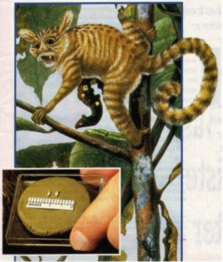
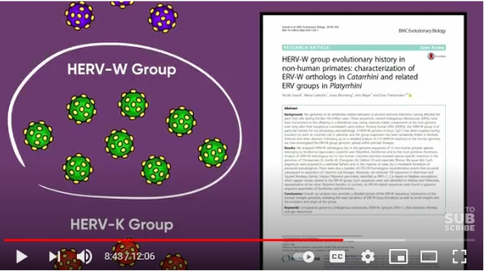
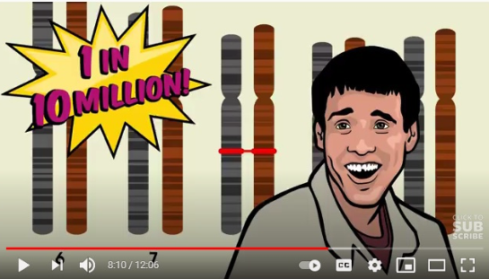

| Email - May 2021 |
| by Do-While Jones |
The claim retroviruses prove evolution is clearly misstated.
Rashed sent us this email:
|
Hello, Pogge. First I would like to thank you for your effort throughout the years to spread knowledge and give average people insight into things they normally wouldn't even bother question. I started reading your newsletter around 2013 and it was one of the main motivators for me to study science (currently a physics student). Onto the main topic, I had come across a video on YouTube arguing how Endogenous Retroviruses are evidence that humans and chimps have a common ancestor. Here's the link for the video: The video doesn't go into any sort of sufficient details about these retroviruses and to be quite frank, I didn't understand much about them from the video or searching through Google. I would greatly appreciate your insight into this matter and whether there is any truth to what is being claimed in the video. Best regards, |
The link took us to a 12-minute video titled, "DNA Evidence That Humans & Chimps Share A Common Ancestor: Endogenous Retroviruses" by a group called "Stated Clearly." The caption at the bottom of the video said,
|
Here we explore the amazing discovery of Endogenous Retroviruses (ERVs) in our own DNA. These are genetic remnants of antient virus infections suffered by our ancestors. It turns out that many of our Endogenous Retroviruses are shared by chimpanzees. This is because we share a common ancestor with them. |
It is worth discussing because this video by the well-funded group called Clearly Stated, had been viewed 65,953 times on May 11, 2021.
When I first watched the video, it seemed very convincing--but when I watched it a second time to transcribe it, it wasn't. I wondered why watching it made it more convincing than reading it.
At first, I thought it might have been the graphics; but it wasn't. It's true that the graphics were well done; but they weren't necessary and didn't add much to the narrative.
Then I realized the difference was speed. When I was transcribing it, I listened to four or five words and stopped the video to type them. Then I listened to four or five more words, and typed them. When I had transcribed a paragraph, I went back and listened to the video while reading my transcript to make sure I had transcribed it correctly.
That forced me to listen to what was said, and forced me to think about it. When I heard it full-speed, it sounded convincing because I didn't have time to question it. When I had time to think about it, the fallacies were obvious. It is always a good idea to think about what you hear or read, rather than just accepting it at face value.
Unless otherwise noted, all the quotes below came from https://youtu.be/oXfDF5Ew3Gc at the time segment given in square brackets.
Near the beginning and end of the video there are some bold assertions about fossils.
|
Today, hundreds of transitional fossils have been found. [0:56] Endogenous retrovirus DNA alone is more than enough to independently confirm what we already knew from the study of fossils. [10:21-10:28] ... independent line of evidence. [1:09] |
What do fossils have to do with DNA? Nothing, really. These statements are "red herrings" designed to make you think that fossils and DNA corroborate each other, to make you believe both lines of evidence are true.
The claim that "hundreds of transitional fossils have been found" is misleading, at best. One might think that there are hundreds of skeletons of transitional creatures. The truth is that hundreds of isolated teeth and bone fragments have been found which evolutionists claim to represent transitional forms. For example, there is Eosimias, claimed to be the transitional creature which "linked man to monkey". 1
 |
|---|
The fossil evidence for this creature consists of the two tiny bone fragments shown in the picture above. Those two tiny bone fragments count as two of the hundreds of transitional fossils, by the evolutionists' method of reckoning.
Even though the classic sequence of "horse" fossils often displayed in museums was debunked in 1951, and admitted to be wrong by the Chicago Field Museum of Natural History in 2002, 2 many people still believe the fossil record shows how horses evolved.
Of course, if retroviruses really are an "independent line of evidence," any discussion of fossils is irrelevant. The fossil argument was included as an attempt to prejudice your attitude toward their argument.
The video begins with this true statement:
|
Even before evolution was discovered, scientists studying comparative anatomy already grouped humans into the ape family, alongside chimpanzees. In those pre-evolution years, however, the word "family' was often used figuratively. [0:27-0:33] |
Think about that. Linnaeus, a creationist, created the modern method of classification (taxonomy) which groups living things in a hierarchal structure (kingdom, phylum, class, order, family, genus, species) based on similarity. It was done for convenience of comparison, not proof of evolution. Things can be learned by comparison and contrast. The classification system helped scientists to compare and contrast living things. Originally, humans and apes were grouped in the same "family" to make it easier to figure out what makes humans different from apes.
After the theory of evolution was proposed, taxonomy was modified in an attempt to represent descent with modification. Taxonomy does not prove humans and apes share a common ancestor. Taxonomy simply recognizes similarities.
To their credit, the video does acknowledge that even after Linnaeus proposed his Systema Naturae in 1738, scientists accepted the fixed-species view. It wasn't until Darwin proposed his theory in 1859 that scientists began to believe in descent from a common ancestor.
After that 2-minute introduction, the video defines what a retrovirus is.
|
A retrovirus is a special type of virus that reproduces by inserting its genes directly into a cell's DNA. The virus genes become a seamless, permanent part of the host cell's genome. The cell treats the virus DNA as if it were its own. It reads the virus genes, using them to make new viruses, and when the cell copies its own DNA before reproducing, it also copies the virus DNA and passes it on as well. [2:15-2:41] |
Actually, that's the definition of an endogenous virus, not a retrovirus. A retrovirus works backward from other viruses, which is what makes it "retro" as we saw in this month's feature article. But, the important point of their argument depends upon the virus being endogenous rather than being retro, so their confused definition doesn't affect their argument.
|
In mammals, modern retroviruses usually infect white blood cells. If, however, a retrovirus happens to infect a sperm cell or egg cell, and if that sperm or egg cell ends up participating in fertilization, the resulting child will have a copy of virus DNA in every single one of her cells. She'll even pass it on to her kids if she has children. [2:42-3:04] |
This is the first hint of their upcoming argument based on improbability. It is a double-edge sword which will cause a self-inflicted wound when Clearly Stated later tries to make the argument that the DNA of the common ancestor of chimps and humans was infected in thousands of places by retroviruses. Remember, when they try to make that argument later, they just said retroviruses usually infect white blood cells, not sperm or egg cells. Their argument depends on "if" sperms or eggs that are lucky enough to result in fertilization are unlucky enough to get infected.
|
Now, you might think this is a guaranteed death sentence for the child, but the immune system can sometimes handle the problem. Normal copying errors in virus DNA can also shut a virus down. [3:05-3:16] |
Like any other parasite, if it is too deadly, it kills the host, thereby killing itself, preventing itself from spreading. So, the virus depends upon the immune system, and normal copying errors, to cripple the virus enough to keep it from killing the host. Isn't it lucky that the immune system and unreliable reproduction quickly disabled so many viruses in our DNA before they could kill us?
|
In these cases, a retrovirus insertion can be thought of as a single, giant mutation for the host. As is the case with all mutations, a retrovirus insertion might have a negative effect on the individual that contains it, it might be neutral, or, with a bit of luck, it could end up being beneficial. [3:16-3:34] |
This is the classic evolutionists' claim that mutations can be beneficial. It takes more than "a bit" of luck. Mutations are so rarely beneficial that it takes "a whole lot" of luck.
Furthermore, there is a difference between a mutation being beneficial and being creative. The classic argument evolutionists have used in the past is sickle cell anemia. If a mutation causes red blood cells to be distorted into a shape like a sickle, they can't transport oxygen as well as normal blood cells. That's bad. But, in areas where malaria is present, malaria can't infect the misshapen red blood cells as easily, either. So, the argument goes, sickle cell anemia can be beneficial in areas where malaria is common, which is why sickle cell anemia is most common in people who live where malaria is rampant.
There is an important difference between "beneficial" and "creative." Darwinian evolution depends upon creative mutations--not beneficial ones. Darwinian evolution depends upon a creative mutation that creates blood cells which will take oxygen to internal places in the body that aren't directly exposed to air. There is a big difference between an existing blood cell changing shape and a blood cell suddenly appearing out of nothing (to say nothing of a heart and blood vessels suddenly appearing to move the blood cells around).
|
Future virus mutations can give new functions, some of which might happen to be useful. [3:41-3:46] |
That's just wishful speculation without any experimental proof.
|
Recent studies have found in at least one case, it seems that an ancient mammal was infected with a virus that ended up aiding the animal in reproduction. Many of that early mammal's descendants, humans included, eventually became fully dependent on the virus gene. We can no longer reproduce without it. [3:46-4:04] |
It might seem that way to Clearly Stated, but that doesn't mean it is true. Just how did that full dependence eventually come about? If we could survive without the infection before, why do we need it now? If we can't survive without it now, how did we survive before the infection?
|
We are part virus. [4:04] |
Ponder that statement. What does it mean? Why would they say that? What does that say about the dignity of man? There must be a reason why that sentence was included in the presentation. You can draw your own conclusion as to what the reason is.
Here is the key point in their presentation:
|
It turns out that the human genome contains thousands of endogenous retrovirus segments, long stretches of DNA with sequences that match those of retroviruses. Luckily for us, none of ours can still make full-fledged viruses. They have simply mutated too much to perform their original virus-y functions. [4:19-4:38] |
How much of that statement is fact, and how much is speculation? It is true that there are many (perhaps thousands of) segments of the DNA molecule that bear a strong resemblance to a virus--but they aren't actually viruses because they don't perform "virus-y functions." Because they look a lot like (but not exactly like) viruses, they assume that they were viruses once-upon-a-time, but have changed since then. It was so very lucky that thousands of viruses invaded egg or sperm cells (instead of white blood cells, like they usually do), and so very lucky that they mutated to lose their harmful nature before they killed our ancestors.
|
An endogenous retrovirus is a stretch of DNA found in your DNA that got there when one of your ancestors was infected by a retrovirus. [4:51-5:00] |
That bold assertion is simply speculation. Not only that, it is a definition designed to support a logically invalid debate trick called "circular reasoning." If an endogenous retrovirus is defined to be a stretch of DNA found in your DNA that got there when one of your ancestors was infected by a retrovirus, then the existence of endogenous retroviruses in DNA is proof that one of your ancestors was infected by a retrovirus. That is a classic logical fallacy because the conclusion is simply a restatement of the premise.
|
On rare occasions, virus genes find their way into sperm and egg cells where they can go on to become a permanent part of a species genome. [5:00-5:09] |
If it only happens "on rare occasions," why are there thousands of them in our DNA?
|
Your endogenous retroviruses act as historical records of past infections suffered by your ancestors. [5:09-5:15] |
No, they aren't "historical records." They are incorrect interpretations of something that was not historically observed.
|
Now at this point, you might be asking, "How do we know for sure that genes with similar sequences to virus genes actually came from viruses?" [5:16-5:25] |
That's a really good question. Their answer is not very good.
|
Has this been experimentally demonstrated? In several different cases, yes. Scientists recently took human cells incubated in petri dishes and slightly mutated the DNA of one of our endogenous retroviruses to see if it would start reproducing viruses again. Sure enough, it worked. An extinct virus was revived from a DNA sequence found in our very own human genome. [5:25-5:50] |
Scientists intentionally manufactured a virus by taking a segment of DNA and changing it. That isn't experimental verification that a virus invaded a sperm cell and accidentally mutated to lose its original functionality. If I take a TV set and modify it to become a radio, that isn't experimental verification that a radio luckily turned into a television.
|
Remember, your endogenous retroviruses show you the unique history of specific virus infections suffered by your ancestors. They are like scars in our DNA that an individual acquires during its lifetime and can pass on to his or her descendants, but only his or her descendants. [6:36-6:53] |
That's poor argument because it confuses scars (an acquired characteristic) with an inherited characteristic. A girl with a heart tattoo on her breast won't give birth to a baby girl with a heart tattoo on her breast. Scars aren't inherited characteristics. An analogy using a genetic disease would have served them better.
|
If humans and chimps share a common ancestor, and if at least some of the infections we find in our genome occurred before the chimp/human split, we should find the same virus genes in the exact same locations in both human and chimp genomes. In contrast, if humans and chimps are not related, they should not share the same history of virus infections. Now, of course, it is possible that throughout history both species, humans and chimps, were infected by some of the same viruses. Humans and chimps sometimes get each other sick today. [7:02-7:33] |
The fixed-species view doesn't depend upon luck to cause the same sequences to appear in the same places. This underhanded debate trick is called the "straw man argument." They misrepresented the fixed-species view in order to refute it. The fixed-species view is that humans and chimps share a common designer, so it is natural to find the same "virus" genes in the exact same locations in both human and chimp genomes. It is the result of design--not luck.
Remember, these stretches of "virus" genes aren't really viruses--they just look a lot like viruses which no longer "perform virus-y functions." [4:38] Like "junk DNA" (which scientists used to believe had no function) these stretches of DNA perform some functions they admit we "eventually became fully dependent" [4:04] upon.
They later repeated the false argument that the fixed-species depends upon luck (rather than design).
|
But if chimps and humans are not related, those virus genes will not be found in identical locations of both chimp and human DNA. This is because when a retrovirus infects a host there are many different spots in a host genome where it might end up inserting itself. Extensive lab experiments with retroviruses have found that there are far more than 10 million possible insertion spots in the human genome. In other words, the chance of a human and a chimp getting infected in the exact same spot by the same specific type of virus is far less than one in ten million. [7:33-8:07] |
We agree that the probability of humans and chimps getting infected at the exact same spot is too small to be the result of chance. It didn't happen by chance. It is evidence of design, consistent with the fixed-species view.
|
They found that we share not just one, not just twelve, but 205 insertions; 205 insertions out of 214 for this particular virus group [presumably HERV-W based on the graphic at 8:43]. This makes perfect sense if we consider the evolutionary view of life. The 205 shared viruses were inserted sometime before the chimp/human split. The six insertions unique to humans and the three unique to chimps either represent insertions that happened after the split, or they represent deletion mutations that removed a few viruses in just one lineage after the chimp/human split. [9:12-9:49] |
 |
|---|
Or, more likely, the 205 shared segments are evidence of common design, and the nine differences represent either random mutations or intentional genetic differences which make us different from chimps.
|
In contrast, if we want to believe the fixed-species view, we are forced to conclude these viruses are simply shared by coincidence. [9:50-9:57] |
No, we aren't forced to that obviously false conclusion. We can reasonably conclude that these segments of DNA, incorrectly assumed to be viruses (which aren't virus-y any more) were put there by a designer for a purpose which they say we can't live without. [4:04]
Their reasoning doesn't add up. Let's review their presentation again.
They began by saying that viruses usually infect white blood cells, not eggs or sperms. That makes sense. White blood cells fight infections, so white blood cells naturally would come in contact with viruses as they travel throughout the body to the site of infections. Eggs and sperms are tucked away safely inside the body where they aren't likely to come in contact with a virus. It makes perfect sense that viruses would rarely infect eggs or sperms.
Despite this, they say it happened thousands of times before the alleged split between man and apes. They gave 214 examples for just one "virus group." The nine differences for that virus group must have happened more than 5-6 million years ago, or maybe 11-14 million years ago, or possibly 30 million years ago (depending upon which evolutionist you believe 3) since apes and humans split.
But wait! The nine different rare "viral infections" (in this one group alone) must have happened almost immediately after the supposed split because all modern apes and humans inherited these nine differences. What are the odds of that?
In the 6 to 30 million years evolutionists believe have passed since men and apes split, why aren't there different viral infections in different races of men? If the evolutionists' racist belief that white men evolved out of Africa from Negroes millions of years ago is true (which, of course, it isn't) then different retroviruses could be used to calculate the time when whites and blacks split.
Red herrings, circular logic, and straw men are techniques often used by dishonest debaters as ways to cheat their way to victory--but I don't think that is the case here. I think Clearly Stated is simply ignorant of the creationists' position, and guilty of projection.
"Projection" happens when people assume other people have the same beliefs as they do, and project their own beliefs and motives on others.
The most obvious example of projection involves "affirmative action." Liberals believe affirmative action is necessary because blacks haven't evolved as much as whites, and therefore can't compete on a level playing field. They insist whites must be handicapped to make it fair. Therefore, when conservatives oppose affirmative action, liberals project their own racist beliefs on conservatives, and think that conservatives are trying to promote white supremacy. When conservatives call for law and order, liberals project their own racist view that most black men are criminals onto conservatives, and mistakenly believe conservatives are pro-police because they are anti-black.
I believe Clearly Stated innocently (but mistakenly) projected their belief (that retrovirus infections occurred in random places on DNA) onto scientists who believe the fixed-species view. This leads them to think that fixed-species scientists foolishly believe the existence of all these retroviruses in the same sections of DNA must be the result of incredibly improbable coincidence. Their probability calculation is irrelevant because fixed-species scientists don't believe it happened by chance.
Scientists who take the fixed-species view agree that retrovirus coincidences can't possibly be the result of luck, which is what convinces them the similarities are evidence of design. Clearly Stated doesn't know enough about the fixed-species view to realize that. Clearly Stated projected their own erroneous belief that retroviruses are the result of luck onto creationists, and used comedian Jim Carey's words to mock creationists for believing something they don't believe.
 |
|---|
I don't think the producers of the Clearly Stated video are intentionally lying about fossils to create an irrelevant red herring argument--they are just repeating the misinformation they have heard in schools which teach only one side of the creation/evolution controversy. That's why it is important to teach both sides in public schools.
People who use circular logic often don't recognize the logical fallacy. Clearly Stated's belief that retroviruses got there when one of our ancestors was infected by a retrovirus is unquestionable, so they blindly accept the notion that the existence of retroviruses is proof of infection.
Like everything else the evolutionists say, it makes sense until you think about it. That is because, like everything else evolutionists say, it is based on speculation, not experimental confirmation. It can't be proved experimentally because it isn't true.
| Quick links to | |
|---|---|
| Science Against Evolution Home Page |
Back issues of Disclosure (our newsletter) |
| Web Site of the Month |
Topical Index |
Footnotes:
1
Disclosure, September 2000, "Eosimias"
2
Disclosure, February 2002, "Horses and Peppered Moths"
3
https://theconversation.com/when-humans-split-from-the-apes-55104#:~:text=It%20was%20even%20suggested%20that%20humans%20had%20split,making%20our%20evolution%20a%20very%20long%20process%20indeed